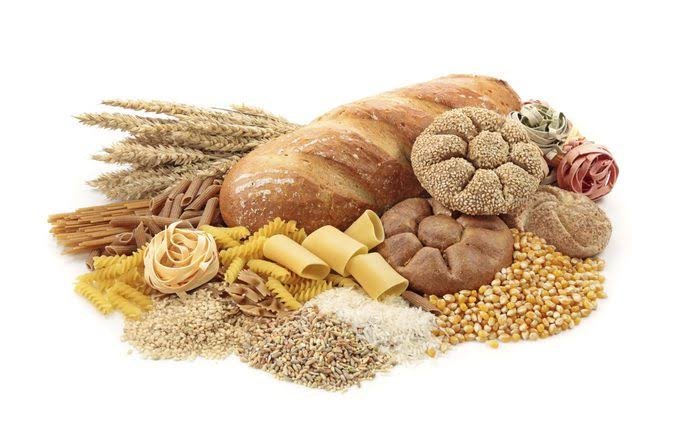

Os carboidratos são moléculas orgânicas formadas principalmente por carbono, hidrogênio e oxigênio. Também são conhecidos como glicídios ou açúcares e representam uma importante fonte de energia para o organismo. Estão presentes em alimentos como frutas, arroz, pães, massas, batatas e cereais. Além de fornecer energia, alguns carboidratos desempenham funções estruturais e de reserva energética nos seres vivos.
Monossacarídeos: São os carboidratos mais simples, formados por uma única unidade. Exemplos: glicose e frutose. A glicose é uma importante fonte de energia para as células, enquanto a frutose é encontrada naturalmente em frutas e no mel.
Dissacarídeos: São formados pela união de dois monossacarídeos. Exemplos: sacarose e lactose. A sacarose é o açúcar comum utilizado em alimentos, enquanto a lactose é o açúcar naturalmente presente no leite
Polissacarídeos: São moléculas formadas por muitas unidades de monossacarídeos ligadas entre si. Exemplos: amido, glicogênio e celulose. O amido funciona como reserva energética nas plantas, o glicogênio armazena glicose nos animais e a celulose participa da estrutura da parede celular vegetal.
Ex 1: A glicose é um monossacarídeo utilizado pelas células na produção de energia necessária para suas atividades.
Ex 2: Já o amido é um polissacarídeo que funciona como reserva energética nas plantas e está presente em alimentos como arroz, milho, mandioca e batata. Durante a digestão, o amido é quebrado em moléculas menores, que podem ser utilizadas pelo organismo.
Os carboidratos fornecem energia para atividades como caminhar, estudar, praticar esportes e manter o funcionamento dos órgãos. Alguns alimentos ricos em carboidratos, especialmente os integrais, também fornecem fibras, que auxiliam no funcionamento intestinal e contribuem para a saúde digestiva. A escolha de alimentos variados e nutritivos ajuda a manter uma alimentação equilibrada.
Ao comer pão no café da manhã ou arroz no almoço, ingerimos carboidratos que serão digeridos e utilizados pelo organismo para obter energia. Quando consumimos frutas, também ingerimos açúcares naturais, água, vitaminas e outros nutrientes importantes para a saúde.
